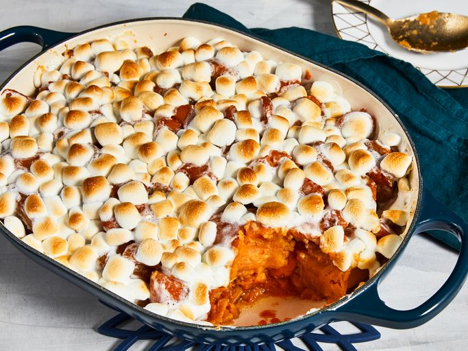

Candied Yams Recipe

Dish Description
Although there's no rule against making candied yams any time you want, there are three times a year when candied yam recipes reach their peak popularity: Thanksgiving by far leads the way, with Christmas and Easter coming in a distant second and third.
So, it's safe to say that if you're making candied yams, it's probably for a holiday feast. And with all the prep and cooking that goes into the holidays, it's no surprise that our Allrecipes home cooks appreciate an easy four-ingredient recipe like Candied Yams as a no-fuss side dish to round out their special holiday menus.
Ingredients
- 1 (29 ounce) can sweet potatoes, drained
- ¼ cup butter, cut into pieces
- ½ cup brown sugar
- 1 ½ cups miniature marshmallows
How to Make This Delicious Dish
This top-rated recipe for candied yams requires only four ingredients: canned sweet potatoes, butter, brown sugar, and miniature marshmallows. The prep time is a mere 15 minutes
(if that much) and the baking time is 25 minutes. That all adds up to about 40 minutes from start to finish.
- Drain the syrup:This is a key move so your candied yams don't turn out runny due to too much liquid in the baking dish. Place the drained yams into a medium baking dish.
- Dice the butter:Cut the cold butter into small pieces and distribute them evenly over the yams.
- Sprinkle the brown sugar:Measure the brown sugar by packing it firmly into the measuring cup. Then transfer it to a bowl to break it up and make it easier to sprinkle. This is a good opportunity to crush any lumps in the brown sugar.
- Cover the mini marshmallows:This is where you might use more than the amount of marshmallows called for in the recipe, depending on how much surface area you're covering. You want them pretty close together so they'll make that signature toasted marshmallow topping that marshmallow-lovers love.
- Bake:Because the yams are fully cooked already, what you're really doing is heating them up and toasting the marshmallows until they're golden and melty.